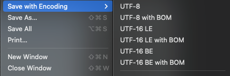
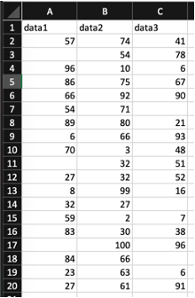

特別講義(データサイエンス)
Published on March 29, 2024 under the tag
特別講義(データサイエンス)の授業資料などを書いてく予定です. (執筆準備中)
本資料は,文系学部生向けにデータサイエンスすることを目的にしたものです. これまでにプログラミングや理数系科目を学習していないことを前提にしているので, 初歩の初歩から一つずつ扱う科目です.
こちらの資料では,授業に必要な技術的な内容に限定して掲載します. 授業概要,授業の注意点,成績等については講義中に別資料で説明します.
1 イントロダクション
開く
データサイエンスは,データを利用して現象を発見したり,予測をする科学の総称です. データの作成やデータを分析する前の処理,利用するコンピュータ関連の技術なども対象となります.
データサイエンスと関連の深い分野/用語として統計や機械学習,AIがありますが,それらもデータサイエンスの一部とみなすことができます.
統計は,データ自体の取得・作成・集計から,データの構造を分かりやすく分析・可視化する学問です.機械学習は,データから予測モデルを作り,意思決定などに応用する学問です. 統計や機械学習・AIは明確に分割することができるものではなく,かなりの部分が共通しています. 特に皆さんがこの講義の先修科目である統計学入門で学んだ,初歩的な統計は,機械学習やAI,データサイエンス全般を学ぶ上で,前提知識となります.この他,どちらかに分類できるわけではない,モデリング,AI,シミュレーション,最適化,次元削減,など様々なトピックが含まれています.

この講義では,統計学入門で学んだ,可視化,数値化,検定,回帰などの統計学の手法をPCを使って行う他,統計学入門の範囲を超えたより発展的な手法に関しても学習します.
しかし,このようにデータサイエンスは非常に広範な学問なので,統計学入門のように個別の手法に関して,細かく理解することはせず,それぞれの概要と利用方に関してのみを扱います.
1.1 プログラミング言語の種類
データサイエンスは言葉の通り,データを扱います. 現在ではデータは基本的に,電子データとして収集,処理されるため,それらの編集,処理にはコンピュータを利用し,操作は基本的にはプログラムによってなされます. したがってプログラミングは,データサイエンスのための前提知識となります.
この講義では最終的には,学生それぞれに研究のためのプログラムを組んでもらいます. データサイエンスや統計でよく使われる言語は, Python, Julia, R, SPSS, matlab などいくつかありますが, この授業では, 現在世界的に広く使われており,習得も容易なPythonを利用します.
プログラミング言語には沢山の種類がありますが,言語によって機能や得意なことが異なります.

プログラミング言語は 実行方式, 書き方,検査の仕方などの特徴がそれぞれ異なり,大まかにはそれぞれ以下のような意味になります.
実行方式
プログラミング言語は,人間にとって理解しやすくデータ構造やアルゴリズムを記述するための手段です.しかし,コンピュータはプログラミング言語を直接理解することはできません.そのため,書かれたプログラムはコンピュータが解釈できる形式,すなわち0と1のビット列である機械語に翻訳される必要があります.この翻訳プロセスは,プログラムの実行方式を以下の二つに分ける要因となります.
- インタプリタ方式
インタプリタ方式では,プログラムは逐次的に機械語に翻訳されながら実行されます.この方式の特徴は,コンパイルする必要がないため,翻訳と実行が同時に行われる点です.これにより,プログラムの変更がすぐに反映されるため,開発中のテストやデバッグが容易になります.しかし,実行のたびに翻訳を行う必要があるため,実行速度が遅くなることが欠点です.
- コンパイラ方式
コンパイラ方式では,プログラム全体が事前に機械語に翻訳され,その結果として得られる実行可能なプログラムが生成されます.コンパイラ方式の利点は,一度コンパイルされたプログラムは,何度も実行される際に追加の翻訳が不要であるため,実行速度が速いことです.また,コンパイル時にプログラム全体を分析できるため,エラーやバグの発見が早期に行え,より安全性が高まるという利点があります.
この二つの実行方式は,プログラムの性質や用途に応じて選択されます.インタプリタ方式は開発の柔軟性が求められる場合に適しており,コンパイラ方式は性能が重視される場合に好まれます.プログラマはこれらの特性を理解し,それぞれの場面で最適な選択をすることが求められます.
書き方
プログラミングとは,基本的にコンピュータに対して実行してほしい命令を記述する作業です.現在主流のプログラミング言語には,大まかに手続き型言語と関数型言語の二つの記述方法が存在します.
- 手続き型言語
この言語タイプでは,プログラムが｢何を,どうするか｣を順番に記述していきます. Python,Java,VBAなど多くの広く使われている言語がこの方法を採用しています. これにより,処理の流れが直観的に理解しやすくなります.
- 関数型言語
関数型言語では,プログラムを実行によってユーザーが得たい結果を抽象化し,関数の組み合わせで記述します.このアプローチは,安全性の向上やデバッグのしやすさといったメリットを提供しますが. 概念の抽象化により理解が難しくなることがあります.
近年では,手続き型言語にも関数型の構文が取り入れられるようになり,手続き型言語内で関数型風に記述することや,その逆も可能になっています.
これらの違いについて更に詳しく知りたい方は,別の講義資料で更に詳しく説明しています.
検査の仕方
プログラミングは,データ構造とアルゴリズムを使用して命令を記述する作業です.ここではデータ型の詳細に深くは触れませんが,あらゆるプログラミング言語において,データはコンピュータのメモリ上に数値の羅列として存在します.それらの数値に意味を与えることでデータ型が形成されます.
プログラムは実行時に,これらのデータ型が適切に使用されているかを検査します.主な検査方法には動的型付けと静的型付けがあります.動的型付けでは,プログラムの実行時にデータ型が決定され,静的型付けではコンパイル時にデータ型が固定されます.さらに,型付けには「弱い型付け」と「強い型付け」という区別も存在しますが,この講義ではその詳細には触れません.興味のある方は,このトピックについてさらに調査してみてください.
- 動的型付け 動的型付けのシステムでは,プログラマが変数の型を明示的に宣言する必要がありません.代わりに,コンピュータはプログラムの実行時に型を推論し,適切な型を自動で割り当てます.この柔軟性により,プログラマはより迅速に開発を進めることが可能になります.一方で,このシステムではコンパイル時の型チェックが行われないため,実行時に型関連のエラーが発生するリスクが高まります.そのため,安全性を確保するためには,プログラマ自身が型の整合性に注意を払い,エラー処理やテストにより問題を検出する必要があります.
- 静的型付け
静的型付けでは,プログラマが変数や関数の型をコード内で明示的に宣言し,これらはコンパイル時にチェックされます.この事前の型チェックにより,プログラムの安全性が向上し,実行時のエラーが減少します.また,コンパイラが型情報を利用して効率的なコード生成を行い,パフォーマンスが向上することがあります.静的型付けは特に,大規模プロジェクトや高い信頼性が求められる場合に適しています.
プログラミング言語は,このような区分や,それ以外の様々な機能によって,用途の向き不向きが決まります(大雑把な目安です).

ではこれらの特徴を踏まえて,Pythonとはどのような言語なのかを見てみましょう.
Pythonは
- インタプリタ型言語で
- 機械語に翻訳しながら動く
- 手軽に書けて手軽に試せる
- でも少し安全性が低く,遅い
- 手続き型言語で
- 次に何をするかを順番に書く
- (ただし関数型っぽい書き方もできる)
- 動的型付け言語で
- 型検査を動かしながら実施
- 動かしてから型が違うと失敗するこれらは,プログラミング言語の大きな分類からみたPythonですが, Python固有の特徴として以下のようなものがあります.
- とにかく読みやすく書きやすく覚えやすい
- ABC言語という教育用言語が元になっている
- 予約語が少ない, → 覚えることが少ない
- インデントでかき分け → 間違いが少ない
- だれが書いても同じになる(と言われてはいる)
- ライブラリが豊富
- 統計処理を全部0から自分で書くのは大変
- 他の人が作ったものを使えるようにするのがライブラリ
- 様々な大学や企業,研究者が膨大な量の統計処理,機械学習ライブラリを開発している
- 遅いけど,Cなどと連携しやすい.
- プログラミング言語ごとに速度は異なる.
- Pythonは結構遅いので大きな計算に時間がかかる.
- とても早い言語で遅い部分を書き換えやすい
- ライブラリは基本的に早くなっているPythonが教育用に良く使われるのは, インタプリタ方式の動的型付け言語であることから手軽に書けるだけではなく,もともと言語として簡単に書けるように作られていることが大きいです.
また, 統計,データサイエンス分野のライブラリが充実しており, これによって誰でも簡単に複雑な統計処理やデータサイエンスの技法が利用できることで,Pythonが広く普及しています.
簡単 → 教育用に → 多くの人が使う → ライブラリが充実 → もっと多くの人が使う
という流れがPythonの最大の強みと言えるでしょう.
実際にPythonはユーザー数が増え続けており,プログラムの共有サイトGitHubにおける2023年のすべての言語のなかで2番目にユーザ数が多い言語となっています. Top 10 Programming languages on GitHub

1.2 授業準備
この講義では,プログラムを自分で作成し,様々な演習をこなしてもらいますが,その前段階として,いくつかの準備が必要となります. このあたりはこの科目の先修科目の統計学入門でも扱っていますが,履修していない人もいますので,順番にやっていきましょう. 非常に基礎的な内容なので, 問題のない人は飛ばしましょう.
1.2.1 テキストエディタ
テキストエディタとは,プログラムを書くためのソフトウェアです. プログラムを書くことをコーディング(Coding)といいます.
テキストエディタには沢山の種類があり,それぞれ独自の機能を持っています. Windwosに最初から入っている｢メモ帳｣もテキストエディタですが,プログラムを書くために様々な機能が追加された高機能なテキストエディタも沢山あります.
例えば,シンタックスハイライト機能は,以下のプログラムのように,プログラムの記述を役割や意味に応じて色付けして見やすくしてくれます.
## シンタックスハイライト
from datetime import datetime
def greet_based_on_time():
now = datetime.now()
current_hour = now.hour
if 5 <= current_hour < 12:
greeting = "Good morning, world!"
elif 12 <= current_hour < 18:
greeting = "Good afternoon, world!"
else:
greeting = "Good night, world!"
return greeting
# 関数を呼び出して結果を表示
print(greet_based_on_time())また,スペースをタブに変換するなどの機能も非常に便利です. 最近では生成AIを利用した自動補完機能がついたエディタなどもありますが,本講義における生成AIの利用に関しては第2回でコードを書き始めた際に説明します.
今までメモ帳以外のテキストエディタを利用したことが無い方には,シンプルなSublime Text 3をおすすめします(今世界的に人気があるのは VSCodeです.非常に便利ですが機能が多すぎて皆さんが混乱する可能性があるので,こちらを選びました).
既に何かしらのテキストエディタを利用している方は,現在使用しているエディタをそのまま利用して頂いても構いません.
このURLをクリックして,ページ上部にあるDownloadをクリックします. 自分のPCに合わせたインストール方法を選択しましょう.

SublimeTextもいろいろな機能を追加することができます. ｢SublimeText 設定｣などで調べて,好きなようにカスタマイズして構い舞いません. カスタマイズをしなくても基本的な機能には問題ありません.
1.3 IMEの設定
プログラムは基本的に ｢半角英数字｣ で記述されます. プログラム中に全角の空白や記号が交じるとエラーの原因となる場合があります. そのため,プログラムを書く前に,そういったミスが起きないようにIMEの設定をしましょう.
タスクトレーからIMEの設定ができます．基本的に記号をすべて半角に設定しましょう（スペースは必ず半角にしましょう）．特に，句読点をコンマとピリオドに変更しましょう．

1.4 CLIの基本操作
プログラムの開発環境にはマウスなどでクリックして操作するGUI(Graphical User Interface)をもったIDE(Integrated Development Environment)などもありますが,基本的には文字によってコンピュータに命令を送るCLI(Command Line Interface)を利用します. 映画やマンガなどで,ハッカーが黒い画面に文字を打っているあれのことです.
コンピュータのオペレーティングシステムとユーザー間のCLIを提供するプログラムをShellといい,Windowsでは,Command PromptやPowerShellなどがあります. MacなどのUnix系では,Bashやzshがあります. いずれも (Windows) Terminalというソフトウェアを介して利用します.
本講義では環境や好みによって好きな環境で開発して構いませんが,ここでは,PowerShellの利用法を解説します.
Windows11の検索バーで Terminalと検索して,出てきた Terminalをクリックしましょう.

自動的にWindows PowerShellが起動します. 立ち上がった,黒色の画面に文字でコマンド(命令)を入力して,コンピュータを操作します.

1.4.1 エンコーディング
実際にコマンドを入力する前に, 初心者がつまづきやすいポイントとして,Windowsのエンコーディングについて解説します.
PCは人間の使う文字（日本語，英語など）が理解できません.PCは機械語と呼ばれる言語で命令を受け付けます.一方で,人間は機械語を読むのが困難です.そこで,人間の使う文字と,機械語の間に変換ルールを設けて人間の文字でされた命令をPCにわかる文字に変換します.この変換ルールを文字エンコーディングと呼びます.
エンコーディングには複数の種類があります(日本語設定のWindowsはShift-JIS,Unix系はUnicodeが一般的です). PythonはUTF-8という文字エンコーディングがデフォルトなので,Windowsにおいても可能な限りUTF-8を用いた方が良いです.
そこで,ターミナル上で利用するエンコーディングを変更します.
PowerShellを起動して, chcp 65001 と打ち込み, PowerShell上で利用する文字エンコーディングをUTF-8に変更しましょう. chcpが利用する文字コードを変更するコマンド(change code page)で,その後に変更したい文字コードを入力します. 65001はUTF-8のコードページ(Windows独自の文字エンコーディング)です. これはPowerShellを起動する度に行ってください．
chcp 65001と入力すると,
Active code page: 65001
PS C:\Users\user>のように表示されるはずです.
1.4.2 日本語表示
Power Shellの設定によっては日本語が表示されず,日本語部分が □ で置き換えられて表示されます.これは,使用しているフォントに日本語が含まれていないために発生します.

設定を変更してて日本語を表示可能にしましょう( 適当な日本語を入力してみて,問題なく表示されるようであれば,変更は必要ありません).
左上の下向きの矢印 > 既定値 > 外観 > フォントフェイスの部分を日本語フォントに変更し保存をクリックすることで,日本語が表示されるようになります.


その他色やサイズなど,好きな設定に変更できます. あとで,好みにカスタマイズしましょう.
1.4.3 ディレクトリ
基礎的なコマンドを学ぶ前に,ディレクトリに関して理解しておきましょう. コンピュータの中のデータは,以下のような木構造になっています. このような木構造によるファイルの構造をディレクトリといいます.
C: -- Users -- hoge
|
-- hoge2 -- Desktop
|
-- Downloads
|
-- Documents -- huga
|
-- huga2CLIにおいて,ユーザはこの木構造のどこかに存在しており,この木構造を移動しながら様々な作業を行います. 現在いるディレクトリのことを working directory(以下wd)やcurrent directoryといいます.
1.5 基礎的なコマンド
ここでは, この講義で必要となる最低限のコマンド,特にディレクトリの移動に関するコマンドを学習します.
wdは, CLIの左側に表示されていることが多いです.
PS C:/Users/hoge2>のように表示されていれば今C:ドライブ下のUsers下のhoge2がwdとなります.
Windowsでは,ディレクトリを区切る文字が
¥あるいは\で表示されていると思います.Macでは,
/です.
本資料では,¥を表示するのが ダルい 技術的に難しいので/を利用しています. 自分の環境に併せて適宜読み替えてください.
CLIの左側に表示されていない場合にもpwdコマンド (print working directory)を入力すると,現在のディレクトリが表示されます.
PS C:/Users/hoge2> pwd
PATH
----
C:/Users/hoge2wdの下に何があるかを調べるコマンドとしてlsコマンド(list)があります.
以下, PS C:\Users\hoge2の部分は省略します.
> ls
Desktop
Downloads
Documents※実際の画面では,もう少しいろいろな情報が書かれているかと思います.
wdから別のディレクトリに移動するコマンドとして cd コマンド(change directory)があります
cd [移動先] と打つことで,lsコマンドで出てきた,ディレクトリに移動することができます.
> ls
Desktop
Downloads
Documents
> cd Documents
> pwd
PS C:/Users/hoge2/Documents移動先のディレクトリ名はすべて自分で入力する必要はありません. 最初の数文字を入力してTab Keyを押すと,自動で保管してくれます.
cd .. と打つと一つ前のディレクトリ,cd ~と打つとホームディレクトリ(基本的には最初に開いた際にいた場所)に一挙に移動することができます.
> pwd
PS C:/Users/hoge2/Documents
> cd ..
> pwd
PS C:/Users/hoge2
> cd Documents/huga
> pwd
PS C:/Users/hoge2/huga
> cd ~
> pwd
PS C:/Users/hoge2mkdir [作りたいディレクトリ名] コマンド(make directory)で,新しいディレクトリを作成できます.
rmdir [消したいディレクトリ名] コマンド(remove directory)で,ディレクトリを消すことができます.
> pwd
PS C:/Users/hoge2
> ls
Desktop
Downloads
Documents
> cd Documents
> ls
huga
huga2
> mkdir huga3
> ls
huga
huga2
huga3
> rmdir huga3
> ls
huga
huga2rmdir コマンドでは中身のあるディレクトリは消せません. オプションを追加することで消せますが,危険なのでここでは教えません.興味があったら自分で調べてみましょう.
練習:作業用ディレクトリを作ろう
これから,作業をするためのディレクトリをコマンドで作成しましょう.
- Documentsに移動
- Programs というディレクトリを作成し移動
- Python というディレクトリを作成し移動
- slds というディレクトリを作成し移動 (名前は好きに設定して良いです. slds; special lecture data science)
これからこの講義で利用するプログラムなどはsldsに保存しましょう.
1.6 環境構築
自身の環境(PC)でプログラムが動くようにすることを環境構築といいます. Python自分のPCで動くように設定をしましょう.
Pythonの環境構築に関して説明します.Pythonを動かす方法は沢山あります.一つのソフトの中でプログラムの編集から実行まで全て完結するIDE(統合開発環境)やブラウザ上で実行する方法もありますが,ここではCLIを利用して実行する方法を準備します.Windowsを所有している学生が多いと思われるので,Windowsを前提に説明します. それ以外のOSの方は分からなければ教員に聞いて下さい.
Pythonの公式サイトからPythonをダウンロードしましょう.
Windows → 最新の一つ前のバージョンの Windows installer (64-bit) をクリック
最新版を入れたいところですが,一番上のVersionは色々と不具合が起きる可能性があるので,上から2つ目のVersionにしておきましょう(バージョンの数字は,サイトを開いた時期によって変わります.)

ダウンロードした Python-3.12.1.exeをクリックするとウィンドウが開きます. 指示に従ってインストールしましょう．
注意点
開いたWindowで
Insatall launcher for all users(recommended)Add Python 12.1 to PATH
というチェックボックスが出てきたら,それらにチェックを入れてから次に進みましょう.
この画面もVersionなどによって変わるため,分からなければ教員に聞いて下さい.
インストールが終わったら 新しくPowerShellを開いて python --version と入力しましょう.
Macの人は python3 --version とコマンドが変わりますので注意してください. Macの人は以降,python コマンドはすべて python3 コマンドに読み替えてください.
install したversionのPythonが表示されれば無事インストールされています.
> python --version
Python 3.12.11.7 Hello World
初めて作成するプログラムとして標準出力(PowerShellなどの画面)にHello Worldと出力するだけのプログラムを作成してみます.
PowerShellを開いて,自分の作業用ディレクトリに移動します.
> chcp 65001
> cd Documents/Programs/Python/sldsテキストエディタで新しいファイルを開き,作業用ディレクトリにhello.pyという名前で保存しましょう.
.pyはPythonプログラムの拡張子です.
保存は,タブからFile > save with encoding > UTF-8の順にクリックしUTF-8で保存しましょう.
それ以降は Ctrl + sなどで上書き保存しても構いません.
作成したディレクトリに移動し, lsコマンドでファイルがあるか確認しましょう. ょう.
> ls
hello.py確認できたらhello.pyに以下の2行を書き足して上書き保存します.
# -*- coding:utf-8 -*-
print(“Hello world!”)保存できたらpython hello.pyコマンドでプログラムを実行します.
(Macの人は python3 hello.pyです.)
標準出力にHello World!と表示されれば成功です.
> python hello.py
Hello World!ここまでで，皆さんはPCでプログラムを書く準備が整いました． あとはプログラムの書き方を学習すれば自身の環境で開発が行なえます．
1.8 プログラミングの勉強の仕方
プログラミング言語は,文字通り言語です. 英語などと同じ様に,使わないと身につきません.なので,大事なことは勉強するより使うことです.
英語の勉強で,一つひとつ文法を覚えることは大切かもしれませんが,実際に英文を書いたり,会話しないと使えるようにはなりません. プログラミングの学習で,学習用の資料や教科書を一つ一つ読んだり,ノートに書き写す人がたまにいますが,かなり効率が悪い方法です. 何も分からなくてもいいので,取り敢えずプログラムを書いて実行するようにしましょう. 資料に載っている例はすべて,実際に書いて実行してみましょう.
一番いい方法は,何も分からなくても取り敢えず,プログラムをつかってしてみたいことを実行することです.1からすべての構文などを覚えようとしないで,自分がやりたい,しなければならないことを,書き始めましょう. 分からないところだけを調べれば十分です.
その際に,新しく知ったことは,メモなどして,あとで参照できるようにしておきましょう. その資料が後々役に立ちます.
プログラミングは,すべて暗記する必要はありません. 覚えていなくても,それの調べ方や載っている資料を知っていれば十分です. 何回も使う機能であれば自然に覚えます.
ただし, Pythonは非常に多くの人が利用しているので,みなさんがこの講義で習うレベルのことは検索すれば既に,完成したプログラムを参考にすることができます. また,ChatGPTなどの生成AIを利用すれば,皆さんの書いたプログラムよりかなりできの良いものをすぐに得ることができます. それらを見て勉強することは大切ですが,ただ,只管コピペしたり,生成AIの結果を利用しているだけでは,全く身につきません. 検索して出てきたコードや,生成AIによるコードを利用しても構いませんが, それをただ貼り付けるのではなく,自分で読んで,理解するようにしましょう.
知らない部分,自分では書けない部分が見つかったらそれを理解するように勉強しましょう. ChatGPTに質問しても構いません. ただ,聞いたことを説明できるようにしましょう.
自分で説明できないものを使えるのはせいぜい学校の課題くらいです. 仕事や研究では,中身の良く分からないコードは利用できません. 最低限自分で理解したものだけを利用してください.
講義では,結果があっていればよいだけではなく,なぜそのように書いたのか,どのような意味か,なぜこうなるのかなどを皆さんに聞きますので,理解に務めるようにしましょう.
演習
- 演習1 Shellコマンドの調査
今回ならったいくつかのコマンド以外にも便利なコマンドが沢山あります. 3つ調べて,使い方を説明してください.
- 演習2 チートシートの作成
チートシートとは「それだけを見れば必要な情報が分かるメモ書き」のことです. プログラミングの学習では, 自分でノートを取って,それさえ見ればなんとかできる資料を作る のは非常に有用です.
.pptでも.txtでも形態は何でも良いので, 自分だけのチートシートを作成して, 今日覚えたこと,調べたことなどをメモしていきましょう.
◦ CLI, Pythonの基礎, Pandasなど学習の区切りごとにシートを分けると便利です.
◦ スライドサイズを事前に大きく設定しておくと便利です
書き方は自由ですが, 検索して有名なチートシートを参考にしてください.
このチートシートは後で紹介してもらいます.
- 演習3
print()の利用
今回作成したhello.pyにおける
print() という関数は()内の文字(""で囲われている部分)を標準出力する関数です.
print()の括弧内の Hello World! 部分を好きな文字に書き換えて実行してみましょう.
演習について
この資料では,所々に演習が指定されています. 演習は自分で行い, どのようにやったのかを講義中に発表,あるいは宿題として提出してもらいます.
家で演習を進めた場合には,講義中にそれが再現できるように,
- どのようにやったのか
- なぜやったのか
などを人に説明できるように必ず作成したメモ,資料などを残しておきましょう.
2 Pythonことはじめ
開く
第2回では,Pythonの基礎の基礎を学習します. 本講義はプログラミング自体の学習を対象としているわけではないので, 講義内で必要な技能を紹介するのみに留めます.
基本的には,公式のPythonチュートリアルの内容で必要十分ですので,そちらにそって学習を進めます. より詳しい内容を勉強したい場合には,プログラミングの講義を履修するか, 千葉商科大学IEEESB などに参加するのが良いかと思います.
今回は取り敢えず,以下の作業を自分で行いながら,Pythonの体験をしてみましょう.
2.1 REPLを使ってみよう
プログラムの対話環境全般をREPL (Read Eval Print Loop)と呼びます. 長いプログラム(スクリプト)を書かなくても対話的にプログラムを実行することができます.
Pythonには複数のREPLがあり,iPython, jupyternotebook, Google Colaboratoryなどがあります.ここではとりあえず,iPythonを利用します. 他のものについても,後ほど出てきます.
CLI(PowerShellやTerminal)を開いて,python(Mac の人はPython3)とだけ打ってEnter Keyを入力するとPythonのREPLが立ち上がります.
~/Desktop
python3
Python 3.10.11 (v3.10.11:7d4cc5aa85, Apr 4 2023, 19:05:19) [Clang 13.0.0 (clang-1300.0.29.30)] on darwin
Type "help", "copyright", "credits" or "license" for more information.
>>>プログラムを書いてEnter Keyを押すとその行のプログラムが実行されます.
>>> 1 + 1
2終了するには,exit()と入力します.
~/Desktop 1m 7s
Python 3.10.11 (v3.10.11:7d4cc5aa85, Apr 4 2023, 19:05:19) [Clang 13.0.0 (clang-1300.0.29.30)] on darwin
Type "help", "copyright", "credits" or "license" for more information.
>>> 1 + 1
2
>>> exit()
~/Desktop 1m 7s2.2 コメントアウト
REPL上でもスクリプトでも,#を先頭につけると,その行はコメントとして扱われます.
ただのコメントであり,プログラムとしては何も実行されません.
>>> # これはコメント何も起きない
>>>2.3 データ型
第1回の検査に関する説明で軽く触れましたが, プログラミングで扱うデータはコンピュータのメモリ上に数値の羅列として存在します. それらの数値に人間が解釈可能な意味を与えたものをデータ型といいます.
Pythonで最初から準備されているデータ型(組み込み型)には以下のようなものがあります. 詳細はこのあと順番に見ていきますので, こんなものがあるということだけ,頭に入れておきましょう.
Pythonのデータ型(一部)
数値型:数値を表す
- 整数(
int) - 浮動小数点数(
float) - 複素数(
complex)
- 整数(
文字列型(
str):文字を表すリスト(
list):いくつかのデータをまとめたものタプル(
tuple):データの組み合わせ辞書型(
dict):keyとvalueからなる辞書を表す真偽値(
bool):正しいか正しくないかなどを表す
2.3.1 数値型(Pythonを電卓として使う)
REPLの動きに慣れるために,電卓で行うような簡単な計算をREPL上で行いましょう.
電卓で行う計算なので,ここで扱うデータ型は数値型になります.
Pythonは,における数値型には整数を表すint,小数を表すfloat,複素数を表すcomplexがあります. 本資料では,その内intとfloatについて扱います.
基本的には1や100のような整数を書けばint型として認識され,1.0や100.3のように小数点をつけるとfloat型として認識されます.
>>> 1
1
>>> 1.0
1.0Pythonではtype()の丸括弧の中にデータを記述することで特定のデータのデータ型を確認することができます.
>>> type(1)
<class 'int'>
>>> type(1.0)
<class 'float'>整数や後述の文字など変換可能なデータ型から,int型へ変換するにはint()の中に,そのデータを書きます. float型に変換するには,float()を使います.intからfloatへの変換では,小数点以下が切り捨てられます.
>>> int(4.9)
4
>>> float(2)
2.0
>>> float("2")
2.0Pythonでは複数の数値型が混ざった計算に対応しています. 基本的に,特定の計算で複数の数値型が混じっている場合には, int型はfloat型に,float型はcomplex型に自動で拡張されるので本講義の範囲ではそれほど意識する必要はありません.
簡単な計算に用いる記号は以下のとおりです.
| 計算 | 記号 |
|---|---|
| 足し算 | + |
| 引き算 | - |
| 掛け算 | * |
| 割り算 | / |
| 整数除算 | // |
| 剰余(余り) | % |
| 累乗 | ** |
| 絶対値 | abs() |
| 整数変換 | int() |
| 小数変換 | float() |
実際の計算は以下のようになるはずです.
計算は普通の電卓と同じような感覚で使えます.
>>> # 足し算
>>> 1 + 1
2
>>> # 引き算
>>> 10 - 5
5
>>> # 掛け算
>>> 2 * 3
6
>>> # 割り算
>>> 100 / 5
20.0計算には順序があり丸括弧 ()で囲うことで計算する順番を変えることができます.
>>> (50 - 5 * 6) / 4
5.0
>>> 50 - 5 * 6 / 4
42.5マイナスの数は数値の前に-をつけます
>>> 10 + -5
5割り算の商と余りは//や,%で計算できます.
>>> # 整数除算(余りを表示しない)
>>> 6 // 4
>>> 1.0
>>> # 剰余(余り)
>>> 17 % 3
2
>>> 5 * 3 + 2
17同じ数字をX回掛けたものを累乗といい,**といいます. 2 ** 3 = 2 * 2 * 2
>>> # 累乗
>>> 2 ** 2
4
>>> 2 ** 3
8abs() の中に数値を入れることで絶対値が計算できます
>>> abs(4)
4
>>> abs(-4)
4:::
演習
以下の計算をREPLを使って自分でしてみましょう. Pythonの計算になれることが目的ですので,どのように計算したかを説明できるようにしましょう.
飴が40個あります.7人で同じ数ずつ分けると1人分は何個で何個あまりますか?
底辺5cm,高さ4cmの三角形の面積はいくつですか?
2の8乗はいくつですか?
累乗と掛け算の計算順序を丸括弧を使った計算で確かめてください.
:::
2.4 変数と代入
値に名前をつけることを代入といい,名前のついた値を変数といいます. = の左側に付けたい名前,右側に値を書きます.
プログラムでは,データはコンピュータの記憶領域(メモリ)に格納されています. メモリは,1バイト(8bit, 1bit は0/1の値)ごとにアドレスという連番がついています.

>>> x = 10変数を宣言するということは,このアドレスにデータを割り当てることを意味します.
x = 10という変数が4バイト利用するとしたら以下のようにアドレス 201 から204 に 10という数字(int)を割り当てるイメージです.

xのアドレスはid(x)で確認できます.
>>> id(x)
4438639120y = x と変数に別の名前を宣言する場合は,同じ場所が参照されます.
>>> y = x
>>> id(x)
4438639120
>>> id(y)
4438639120x=15と再度代入する(再代入)と,新しくメモリが確保されます.
その際に,xをコピーしていたyの値も変わることに注意しましょう.
>>> x = 15
>>> id(x)
4438639280
>>> id(y)
4438639280
数値の場合にはyに再代入しても,xの値は変わりません.
>>> x = 10
>>> y = x
>>> id(x)
4438639120
>>> id(y)
4438639120
>>> y = 15
>>> y
15
>>> x
10
>>> id(x)
4438639120
>>> id(y)
4438639280この挙動は,後に出てくる配列では,異なるので注意が必要です.
変数に名前をつける際には,以下の点に注意しましょう.
小文字で始まる英数字を使う
複数の単語を使うときは
_(アンダーバー)でつなげる英語で名前をつける
nagasaではなくlengthnamaeではなくname
長くなっても良いので他の人が見たときに意味がわかる名前をつける
- 三角形の高さを表したいとして
xやhなどの一文字よりもheightのほうが良い- 他にも高さを表す変数が登場するなら
triangle_heightのほうがより分かりやすい
- 三角形の高さを表したいとして
>>> # 長方形の面積を求める
>>> width = 20
>>> height = 5
>>> area = width * height
>>> area
900
>>> #定義されていないものはエラーがでます
>>> space
Traceback (most recent call last):
File "<stdin>", line 1, in <module>
NameError: name 'space' is not defined演習
- 変数を利用して以下の猫型ロボットのBMIを計算してください
- BMI = 体重(kg)÷身長(m)の2乗
- 猫型ロボットの身長 129.3cm
- 猫型ロボットの体重 129.3kg
2.4.1 代入演算子
代入は=でつなげる以外にもいくつかのパターンがあります.
まずは,普通に変数に数値を代入してみます.
>>> x = 1
>>> x
1
>>> x = 2
>>> x
2このように具体的な値を=の右側に記入するのは直感的に分かりやすいのですが,pythonのプログラムを見ていると,左右に同じ変数名が登場する場合があります.
>>> x = 1
>>> x = x + 1
>>> x
2これは,右側に登場するxは過去のxを表しており,左側に登場するxは,過去のxを利用して作られた新しいxであると解釈しましょう.
上の例では,x=1という過去の変数を使って, x(=1) + 1という新しいxを作っています.
これは自己代入と呼ばれ,数学や関数型言語における再帰とは異なり,手続き型言語独特の記法なので注意しましょう.
足し算+を使った自己代入は省略して, x += 1のように書けます. これは x = x + 1の省略形で複合代入演算子といいます.
同様に,引き算-=,掛け算 *=, 割り算 /=などの代入演算子も存在します.
>>> x = 10
>>> x -= 5
>>> x
5
>>> x *= 5
>>> x
25
>>> x /= 5
>>> x
52.5 文字列型
ここまでは,数値のみを扱ってきましたが,Pythonには数値以外にもいくつものデータ型が存在します.
次に, 文字を表す文字列型(str)の利用法について見ていきましょう.
文字列型は,文字を""(ダブルクオーテーション),あるいは''(シングルクォーテーション)で囲みます.
>>> "イヌ"
'イヌ'
>>> 'ネコ'
'ネコ'
>>> type('ネコ')
<class 'str'>三連引用符"""で囲むことで複数行書くことができます.
>>> """ あ
... い
... う"""
'あ\nい\nう'\nは改行を表しています.
>>> print('あ\nい\nう')
あ
い
う2.5.1 文字列の演算
文字列は+で連結,*で反復させることができます.
>>> name = '太郎'
>>> '私は' + name 'です!'
'私は太郎です!'
>>> name * 3
'太郎太郎太郎'文字列が代入された変数の後ろに[]をつけて,番号を[]の中に入れると,指定した番号番目の文字が取得できます. このような[]で指定する数字をindexといいます.
Pythonという文字に対して,indexは以下のように振られています.
-をつけて後ろから数えることもできます.
| 文字列 | P | y | t | h | o | n |
|---|---|---|---|---|---|---|
| 前から | 0 | 1 | 2 | 3 | 4 | 5 |
| 後ろから | -6 | -5 | -4 | -3 | -2 | -1 |
Pythonの文字列は,最初の文字を0番目と数えるので注意しましょう.
>>> word = 'Python'
>>> word[0]
'P'
>>> word[5]
'n'
>> word[-6]
'p'インデックスの[]の中で,[Start:End]のようにはじめと終わりのインデックスを指定することで,文字列の1文字ではなく,部分的な文字列を取得することもできます. これをスライスといいます.
終わりは,一つ手前までになるので注意しましょう.
>>> word[0:2]
'Py'
>>> word[2:5]
'tho'はじめか終わりのインデックスを省略すると,以降全てという意味になります.
>>> word[:4] #0から4まで
'Pyth'
>>> word[2:] #2から最後まで
'thon'演習
- 演習1
'abcdefg' から 'cde'をスライスで抜き出してください.
- 演習2
x = 'abcdefg'と定義して, xに操作を加えて'abfg'を作ってください.
- 演習3
x = 'abcdefg'と定義して, xに操作を加えて'bbbeee'を作ってください.
2.6 リスト
複数の値をまとめるデータ型の一種にリスト型があります. コンマで区切って角括弧の中に複数の値を書くことで,ひとまとまりのデータを作れます. リストの中身一つ一つを要素といいます.
>>> squares = [1,4,9,16,25]
>>> squares
[1,4,9,16,25]リストは文字列と同じ様に,インデックスやスライスで要素を取得できます.
>>> squares[0]
1
>>> squares[-1]
25
>>> squares[-3:]
[9,16,25]2.6.1 リストの演算
リストも+で連結,*で反復させることができます.
>>> [1,2,3] + [4,5,6]
[1,2,3,4,5,6]
>>> [1] * 3
[1,1,1]
>>> [1,2] * 3
[1,2,1,2,1,2]リストはインデックスやスライスで指定した要素に値を再代入して変更することができます.
>>> animal = ['cat','dog','bird']
>>> animal[1] = 'mouse'
>>> animal
['cat','mouse','bird']
>>> animal[1:] = ['fish','pig']
>>> animal
['cat','fish','pig']リストは,数値などとは変数に別の名前をつけたときの挙動が異なるので注意が必要です.
数値や文字列は,別の名前をつけた変数に再代入した場合もとの変数は,変更されません.
>>> cat = 'cat'
>>> cute_cat = cat
>>> cute_cat = 'cute_cat'
>>> cat
'cat'
>>> cute_cat
'cute_cat'cute_catを変更してもcatは変わりません. 代入の説明箇所で見たように,数値などの変数の場合は,cute_catにはcatの値が渡されており,値が同じ場合には同じアドレスを参照するが,値が変更された場合には,
新しいメモリが確保されます.
しかし,リストは別名の変数を変更すると元の変数の値も変更されます.
>>> animal = ['cat','fish','pig']
>>> species = animal
>>> species[0] = 'horse'
>>> animal
['horse', 'fish', 'pig']
>>> species
['horse', 'fish', 'pig']animalの別名speciesを変更するとanimalも変更されています. これは,配列などは新しい名称の変数に,値ではなくアドレスを渡していることによります.どちらの変数もずっと同じアドレスを参照しつづけるため,片方が変化すると同じアドレスを参照しているもう片方の値も変わります.
>>> id(animal)
4441753024
>>> id(species)
4441753024
>>> species[0] = 'cat'
>>> id(species)
4441753024しかし,インデックスやスライスによる要素の変更ではなく,全体を再代入した場合には新しいアドレスが割り当てられます.
>>> species = ['a','b','c']
>>> id(species)
4441834752同じ値を持つが異なる場所を参照するリストを作りたい場合には,copy()を利用します.
>>> animal = ['cat','fish','pig']
>>> species = animal.copy()
>>> id(animal)
4441764160
>>> id(species)
4441798208
>>> species[0] = 'dog'
>>> animal
['cat', 'fish', 'pig']
>>> species
['dog', 'fish', 'pig']このような挙動は今後出てくるpandasなどの配列でも同様なので,注意が必要です.
append()というメソッドを使って,リストの末尾に要素を追加することができます.
>>> animal
['cat','fish','pig']
>>> animal.append('dog')
>>> animal
['cat','fish','pig','dog']リストの長さ(要素数)を知りたい場合には,len()関数を利用します.
>>> animal
['cat','fish','pig','dog']
>>> len(animal)
4メソッド,関数という言葉が説明無しに突然でてきました.
これらの違いについて理解するには段階が必要なため,後に説明します.
ここでは,変数などの後ろに変数.f()の形で.を利用してつけるものをメソッド,単独でf()のように利用するものを関数ということだけ覚えておきましょう.
なお,いずれも()の中に値や変数を書いたり書かなかったりしますが,その意味についても後ほど扱います.
リストはリストも要素にすることができます. このようなリストを多重リストと呼びます.
>>> x = [1,2,3]
>>> y = [4,5,6]
>>> z = [x,y]
>>> z
[[1,2,3],[4,5,6]]
>>> z[1]
[4,5,6]
>>> z[0][1]
2演習
xs = [[1,2,3],[4,5,6],[7,8,9]] というリストを作り,以下の操作を行ってください.
xsの長さを求めるスライスを使って以下を抽出する
[[4,5,6],[7,8,9]][[1,2,3]][[7,8,9]][8,9]
[4,5,6]を[-4,-5,-6]に更新する1を-1に,9を-9にする[7,8,-9]のあとに,[10,11,12]を追加する
2.7 タプル
Pythonにはリスト以外にも複数のデータ型の組み合わせを表すデータ型が存在します. タプルは,データの組を表すデータ型であり,()の中に,で区切ってデータを入れることでリストのようにデータを格納することができます.
タプルも複数のデータをまとめることができます.
しかし, リストのように扱うことは推奨されません. (後に扱う関数などで返り値を複数返したいときなど)基本的に2,3個のデータの組を扱いたい場合に利用して,3個以上のデータを扱い場合にはリストなどを使うようにしましょう.
>>> name_and_age = ('Taro',10)
>>> name_and_age
('Taro', 10)タプルの値の取り出しには,同じ形のタプルに変数を格納することで値を取り出すパターンマッチが良く利用されます.
>>> (name,age) = name_and_age
>>> name
'Taro'
>>> age
10インデックスによる値の取得も可能です.
>>> name_and_age[0]
'Taro'
>>> name_and_age[1]
10ただし,インデックスを利用した要素の変更はできません.
>>> name_and_age[0] = 'Hanako'
Traceback (most recent call last):
File "<stdin>", line 1, in <module>
TypeError: 'tuple' object does not support item assignment2.8 辞書型
名前とその意味, 商品と在庫数,日本語名と英語名など,特定のデータに対応する別のデータの組み合わせを沢山扱いたい場合には,辞書型(dict)が利用されます. 辞書型はkeyとvalueと呼ばれるデータの組み合わせからなります.
辞書型のデータは,{key1:value1,key2:value2,...}のように,keyとvalueの組み合わせを:で表して,{}にコンマで区切るかたちで作成します.
例えば, 学生と学生の出席回数の組み合わせを表すデータは以下のように作成されます.
>>> attendance = {'Taro':10,'Hanako':12,'Kenta':9,'Shizuka':10}
>>> attendance
{'Taro': 10, 'Hanako': 12, 'Kenta': 9, 'Shizuka': 10}dict()にkeyとvalueのタプルのリストを渡すことで生成する事もできます.
>>> attendance = dict([('Taro',10),('Hanako',12),('Kenta',9)])
>>> attendance
{'Taro': 10, 'Hanako': 12, 'Kenta': 9}特定のkeyでそれに対応するvalueを呼び出すには,keyをインデックスとして[]を利用します.
>>> attendance['Taro']
10
>>> attendance['Shizuka']
10新しいkey:valueを加える場合にも,valueを変更する場合にも,インデックスによる代入が利用できます.
>>> attendance['Taro'] = 11
>>> attendance['Taro']
11
>>> attendance['Shinzi'] = 12
>>> attendance['Shinzi']
12keyを削除するにはpop(消したいkey)メソッドを利用します.
>>> attendance.pop('Hanako')
>>> attendance
{'Taro': 11, 'Kenta': 9, 'Shizuka': 10, 'Shinzi': 12}辞書型のデータから,keyのみ,valueのみを抜き出すには,keys(),values()メソッドを利用します.
リストとして取得したい場合には,list()関数で囲みます.
>>> attendance.keys()
dict_keys(['Taro', 'Kenta', 'Shizuka', 'Shinzi'])
>>> attendance.values()
dict_values([11, 9, 10, 12])
>>> list(attendance.values())
[11, 9, 10, 12]これらの処理はリストを利用しても可能ですが,辞書型のほうが計算が速いため辞書型を利用するようにしましょう. プログラミングにおいては用途に応じて適切なデータ型を選択することが重要です.
同じような処理が可能なデータ型でも,その処理を実行するのにコンピュータが必要な計算の数や,使用するメモリの量,速度などに違いがあります.
この資料では扱いませんが,大規模なデータを扱う場合や,大量の計算を行うプログラムを書く際には,計算量を考慮してアルゴリズムとデータ構造を適切に設計する必要があります. 興味のある方は,調べてみましょう.
演習
5種類の果物の日本語名と英語名を変換する辞書を作成し,実際に機能する様子を紹介してください.
上で作成した辞書にもう一つ果物を追加してください.
2.9 論理演算
それが正しいか間違っているか判別できる文を命題といいます. 命題の結果を表すものとして真(正しい),偽(間違っている)という値を用います. 真と偽を併せて真偽値といいます.
例えば,1は2より大きいという命題は,間違っているので偽となります. 人間は必ず死ぬという命題は,今のところ不老不死の人間がいないので真です.
プログラミングではこのような命題の判断がしばしば必要となるため,それらを扱うデータ型が提供されています.
真偽値を表すデータ型としてBoolがあります. BoolはTrue(真),False(偽)のいずれかです.
Pythonには命題の判定を行う演算子として,以下のようなものが準備されています.
| 記号 | 意味 |
|---|---|
> |
より大きい |
>= |
以上 |
< |
より小さい |
<= |
以下 |
== |
等しい |
!= |
等しくない |
in |
含む |
数値などの大小関係を調べるときには,比較演算子 >,>=.<,<=を利用します. 演算子の左右に数値を書くと,結果に応じて真偽値が帰ってきます.
>>> 1 > 2
False
>>> 1 < 1.5
Trueリストや文字列に特定の要素(文字列)が含まれているかは,inで判定できます.
>>> 'ab' in 'abcd'
True
>>> 1 in [3,4,5]
False値が等しいか/等しくないかを判定するには,==と!=を利用します.
>>> 4 == 4
True
>>> 'cat' != 'cat'
Falseこれ以外にもPythonにはいくつかの演算が準備されていますし,自分で作ることも可能です.
True や FalseなどのBool値は, AND(かつ),OR(または),NOTという演算で計算することができます(XORというのもあるが省略).
PythonではAND は &, OR は |, NOT は not という演算子が提供されています.
A,Bが命題だとして,A & Bは両方Trueのときに,Trueとなります. A | Bは片方どちらかがTrueのときにTrueとなります.
例えば,
1は2より大きい かつ 2は0より大きいという命題は,2は0より大きいは正しいですが,1は2より大きいが間違っているので全体として,Falseです.ネコは哺乳類である または ネコは鳥類であるという命題はネコは鳥類であるが間違っていますが全体としてはTrueです.
演算の結果は,それぞれ以下のようになります. これを真偽値表といいます. ここでは,最低限の例だけを紹介しますが,より深く理解したい人は論理学などの講義を受講しましょう.
| 命題Aの値 | Bの値 | A & B |
A | B |
|---|---|---|---|
| True | False | True | True |
| False | True | False | True |
| True | False | False | True |
| False | False | False | True |
Pythonではそれぞれの命題を丸括弧で囲んで,&,|演算子で論理演算を行うことができます.
>>> (1 > 2)
False
>>> (2 > 0)
True
>>> (1 > 2) & (2 > 0)
False
>>> (1 > 2) | (2 > 0)
Truenot は命題の否定を表しており TrueがFalse,FalseがTrueになります.notは命題の前に書きます.
>>> (1 > 2)
False
>>> not (1 > 2)
True演習
ある値が偶数かどうかは,2で割った余りが0かどうかを判定することで判定できます.
x=101,y=202として, 以下の命題の真偽をPythonで計算してください.
- xが偶数
- yが偶数
- xが偶数かつyが偶数
- xが偶数またはyが偶数
- x + y が奇数
3 ライブラリの利用
開く/閉じる
通常のPythonの学習では,基礎的な演算のあとにFor文やIF分を学びます. しかし,この講義では通常のリストなどよりもむしろPandasとよばれるライブラリの機能を多用します.なので, 先にライブラリの利用法と,Pandasの利用法を学び,それらを事例としてFor文やIF文,関数などの基本的な構文を学習します.
3.1 (復習)スクリプトの実行
これまでは,対話環境でプログラムを実行してきましたが,対話環境は複雑な処理には適しません.
これから,1行1行プログラムを記述して対話環境で実行するのではなく,複数行のプログラムをまとめて記述して一気に実行する方式に切り替えます. 複数行のプログラムを一つのファイルにまとめたものをスクリプトファイルと呼び, 書かれているプログラムをスクリプトといいます. 初回に行ったHello Worldはスクリプトを実行していました.
Pythonのスクリプト実行の方法
テキストファイルにプログラムを書く
ファイルの拡張子を
.pyにして保存する- 講義で作成したプログラムは,あとで自分が参考にできる最高の資料です.
あとで何をやっているのか自分が理解できるように プログラムにはできるだけ沢山のコメントを付けましょう
ファイル名は,後からみて,中身が何であるかわかるよう
英数字で名付けましょうa.pyやfile.py,課題.pyなどはやめましょう
- 講義で作成したプログラムは,あとで自分が参考にできる最高の資料です.
Shell上でそのファイルが保存されている場所に移動する
python ファイル名コマンドで実行する- ※
pythonは空白の後に続くプログラムを実行するためのコマンドです. - ※ Macの人は
python3を利用します.
- ※
演習
第1回で行ったことを参考に,Let's start the Python programming!! と表示されるプログラムを作成しましょう. ファイル名などは適切に名付けてください.
まだ,今後沢山のスクリプトを書いていきますので,適切にフォルダなどを整理しましょう.
3.2 ライブラリとは
第1回の講義で説明しましたが,プログラムをまとめて他の人がプログラム内で利用できるようにしたものをライブラリといいます. Pythonは,統計,データサイエンス関連のライブラリが充実しているために,利用者が多いということでしたね.
Pythonは様々なライブラリを呼び出して利用するための言語として利用されている側面が大きいです.なので, 目的に応じた様々なライブラリの使用法を知って初めてPythonの力を活用できます.
ライブラリのより細かい概念として, モジュール(Module)とPackage(Package)があります.
Module- 他のプログラムに読み込む(
import)することができるスクリプトファイル
- 他のプログラムに読み込む(
Package- Moduleの名前空間をドットで構造化する手段
Library- 用途に応じてPackageをまとめたもの
importや名前空間の意味は,実際に使っていきながら見ていきましょう.
3.3 ライブラリを使ってみよう
データサイエンスは,名前の通りデータを扱いデータから何かしらの示唆を得るための学問です. データサイエンスにおける分析は概ね以下のように推移します.

それぞれの段階の処理は,基本的には特定のライブラリを利用して行います. したがって,Pythonによるデータ分析の学習では,基本的にそれぞれの段階でのライブラリの利用法を学ぶことが中心になります.それぞれのライブラリの利用法はこれから順次扱いますが,ここでは,第1段階として,データの読み込みに関するライブラリpandasを事例に一般的なライブラリの使用法を体験します.
何かしらのデータを分析するにはプログラムにデータを読み込む必要があります. Pythonにおいてデータの読み書き,整形,編集,生成などを支援する代表的なライブラリに pandasがあります.
ライブラリを利用するためには,まずライブラリを皆さんのコンピュータにインストールする必要があります.
Pythonでライブラリをインストールするにはpipを利用します. pipは,Pythonのインストール時に資料の指示に従ってチェックをつけていれば,既にインストールされているはずです.Shellにpip --versionと入力してバージョンが表示されていれば,インストールされているので確認してみましょう(Macの人はpip3 --version).
> pip --version
pip 24.0 from /Library/Frameworks/Python.framework/Versions/3.10/lib/python3.10/site-packages/pip (python 3.10)pip installのあとに,インストールしたいライブラリ名を入力すると,ライブラリがインストールされます. 今回は pandasをインストールするのでpip install pandasと入力しましょう. 文字が沢山表示されますが, 問題ありません. 画面が止まるまで待ちましょう.
pandasはデータを扱うためのライブラリなので利用するには,何かしらのデータが必要です. 本格的な利用はこのあとでしますが,取り敢えず利用確認用の簡単なデータを作成しましょう.
データはテーブルデータの形式を取ることが多く,pandasで読み込みや書き込みができるテーブルデータとして代表的な形式にCSV(Comma Separated Values)があります.
最近はテーブルデータの高速な処理が可能なPolarsなども流行っていますが,本資料ではPandasに限定します.
また,JSONやXMLなどの他のデータ形式に関しては扱いません.
CSVは,テキストファイルの一種で,その名の通りコンマ(,)で列を区切り,改行で行を区切ることでテーブルを表現します. 標準的なCSVでは最初の1行は,データではなく,各列の中身を表すタイトルとなっておりHeaderと呼びます.2行目以下のデータ部分をBodyと呼びます.
Excelを開いて1行目にWeight,Height,BMIと記入し,それぞれの列に以下のように数値を記入しましょう.BMI列は空欄で構いません.

このファイルをUTF-8のCSVとして保存します. ファイル名はbody_data.csvとしましょう. Excelではファイルの種類でCSV UTF-8 (コンマ区切り)(*.csv)と選択することで保存できます.

このファイルを作業ディレクトリの中に作ったdataという名前のフォルダに保存します.
試しに,body_data.csvをテキストエディタで開くと,中身がコンマと改行で表現されていることが分かります.
Height,Weight,BMI
170,55,
180,72,
155,42,Sublime Textでは FileタブのSave with Encoding内のUTF-8 with BOMで保存し,拡張子を.csvにすることで保存できます.

BOM(Byte Order Mark)について
Unicode(UTF-8, UTF-16など)で文章が記載されていることを示す符号をBOMといい,ファイルの最初に記載されます.
これがついていることで,ソフトウェアでデータを読み込む際に自動的に,適切なエンコーディングが選択されます.
Excelの場合はCSV UTF-8 (コンマ区切り)(*.csv)でBOM付きのUTF-8として保存されますが,日本語環境ではBOMがついていないCSVファイルをShift-JISで開くため,外部ファイルの読み込みから適切なエンコーディングを選ばないと文字化けします.
この知識は後ほどpandasを利用したCSVの保存で再度扱います.
このファイルを読み込んで,pandasの機能をいくつか確認するためのスクリプトを書きます.
テキストエディタでpandas_test.pyという空のファイルを作成し,以下のように記述しましょう.
import pandas as pd
df = pd.read_csv('data/body_data.csv')
print(df)
print(df['Weight'].mean())
print(df['Weight'].median())
df['BMI'] = df['Weight'] / (df['Height']/100) ** 2
print(df)このプログラムを実行すると,以下のように表示されるはずです.
❯ python3 pandas_test.py
Height Weight BMI
0 170 55 NaN
1 180 72 NaN
2 155 42 NaN
56.333333333333336
170.0
Height Weight BMI
0 170 55 19.031142
1 180 72 22.222222
2 155 42 17.481790このプログラムで何をしているのかを簡単に見ていきましょう.
まず一行目のimport pandas as pdですが,import pandasによってこのプログラム内でpandasを利用可能にしています. しかし,pandasと毎回かくのは面倒なので,省略形のpdという名前を定義しています. Pythonではimport [利用したいライブラリ名] as [省略形]
の形で,ライブラリのインポートと省略形の定義を同時に行えます. pandasはdfと省略するのが一般的です.
続いて2行目の df = pd.read_csv('data/body_data.csv')で,先ほど作成した dataフォルダにあるbody_data.csvというファイルを読み込んでいます. df =で読み込んだデータにdfという名前をつけています.
3行目のprint(df)で,読み込んでdfという名前をつかたデータを表示しています. REPLでは,変数を書くだけで表示されていましたが,スクリプトでは標準出力したいものはprint()関数を適用する必要があります.
4,5行目はWeight列の平均(mean)と中央値(median)を求めて表示しています.
6,7行目はもともとのデータで空だった,BMI列を計算し,計算結果を表示しています.
これらの操作の具体的な使い方や意味はこのあと細かく扱いますが,取り敢えず,pandasではこのようにして,データを読み込み,処理することができます.
3.4 なぜExcelではだめなのか
先ほど行った簡単な表計算であれば,Excelでも簡単に同じことができます. では,なぜややこしいPythonなどを学んでプログラムで同じことをするのでしょうか.
まず,第1にPythonを利用することで
機械学習や高度な検定など,Excelではできない高度な処理が可能になります.
先ほど行った簡単な集計であればExcelでも可能ですが,後ほど行う機械学習や自然言語処理などの高度な処理はExcelでは実行が困難です. また, データに関してもExcelでは最大で1,048,576行程度のデータしか扱うことができませんが,(この講義では扱いませんが)データサイエンスでは,それを超えた大容量のデータを扱うことがしばしばあります.
第2の理由として,
Excelが複数の連続した複雑な処理には向いていないということが挙げられます.
Excelでは,何か作業をしても過程が記録されず,結果だけが残ります. また,折角複雑な処理を実行しても,異なるデータなどで同じ処理を行う場合にはゼロから繰り返す必要があり,処理自体を再利用できません(VBAやマクロなどはありますが,それらは結局プログラミングをしているので同じです.)
Excelのこのような特性から,Excelによる複雑な処理の実行は,人間の作業に依存する傾向が強く,ミスの原因となります.
このことについて,以下のデータを事例にもう少し具体的に意味を見ていきましょう.

例としてこのデータに対して以下の3つの処理をすることを考えます.
1. いらない部分を削除する
2. 右側に行和を表す列を足す
3. とある列の値が一定以下のデータを抜き出す
この場合,EXCELでは最後の抜き出したデータだけが残り,中間の段階の処理も,過程も記録されません. したがって,
- 途中で間違っていても気づけない,チェックできない
- 何をしたのかを他の場所にメモして置かなければ分からない,メモも難しい
- 別のデータを使う場合同じ処理をもう一度する必要がある
などの問題がよく起こります.
また,削除の作業などは(これくらいなら自動でもできますが)一つ一つ消していく必要があり大きなデータ(数万行とか)では非常に手間がかかります.
Excelはこのように,処理が人間の記憶や,正確さに依存しています. その結果,ミスの原因となっています.
例えば, こちらの記事(The 7 Biggest Excel Mistakes of All Time)では,過去にExcelの操作ミスで起きた大規模なミスの事例が紹介されています.
- 2008年 バークレイズ・キャピタル
隠していたセルがPDF板では表示されていたことによる数百万ドルの損失が発生.
- 2012年 ロンドン オリンピック
作業員のタイプミスで,10万枚のチケットが払い戻し
- 2012 JPモルガン
Excelのコピペミスにより60億ドルの損失
ちなみにこの記事には載っていませんが,2019年に話題になった,厚生労働省の毎月勤労統計における不正問題もExcelのミスが原因の一つです.
一方プログラムでは,これらの問題が解決可能です.
先程のExcelの作業と同じ例で考えてみましょう. 以下のコードは先程のExcelで行った作業を実行しています.
import pandas as pd
#データの読み込み
df = pd.read_csv('sample.csv')
#いらない部分を削除する
df.dropna(axis='index',how='any',inplace=True)
#右側に行和を追加する
df['sum'] = df.sum(axis=1)
#data3が50以下の行を消す
df = df[df['data3']>50]
#確認
print(df)実行結果は当然Excelで行ったものと同じです.
> python sample.py
data1 data2 data3 sum
3 86.0 75 67.0 228.0
4 66.0 92 90.0 248.0
7 6.0 66 93.0 165.0
10 27.0 32 52.0 111.0
18 27.0 61 91.0 179.0しかし, Excelと異なりこのプログラムを実行しても元データは変わっていないため,元の状態にいつでも戻ることが可能です. 更に何を行ったかの処理がプログラムとして残っているため,途中で間違いがないかのチェックや修正が可能です. (本講義では扱いませんが, 実際にはプログラムでもミスは絶対におきます.そのためテストを実施するのですが,人間の行うチェックリストなどのテストよりもプログラムで行うテストの方が信頼性が高いのも利点です.)
また, プログラムがそのまま作業メモになっているので,他人に何を行ったかの説明が可能です. 加えて,このプログラムを再利用することで,異なるデータで同じ作業をする場合に再利用することが可能です. また,実際の処理はすべてプログラムが自動で行うため作業の手間がデータの容量にかかわらず一定です.
確かに,これまでに皆さんが講義で習ってきたような内容であれば,Excelのほうが学習コストが低く手軽に行えます. しかし,今後行うような統計処理やデータサイエンスなど,処理が複雑になればなるほど,プログラムで処理するメリットが大きくなります.
4 データの取得と編集 (執筆中)
開く/閉じる
これからデータをプログラム上で扱うにあたって,まずはデータについて考えてみましょう.
データは,基本的に誰かが収集・作成したものです. 自然科学においては,実験によってデータを収集し,人文・社会科学では,調査によってデータが集められます. データの作成はそれ自体でそれぞれ,実験計画法,社会調査法といった学問分野になっています.
データサイエンスは,データを利用して行う学問でセウが,データを収集・作成するのは専門知識,技能,時間,お金などが必要であり,データの作成自体が大きな仕事です.
データを自分で集めるには大変な手間がかかるので, 研究機関や,行政,大学,調査会社など他者が集めて公開しているデータを利用するのも一つの手段です. この講義では, 基本的に公開されているデータを利用して, 学習,研究を行います.
実験や調査によって集められたデータを原データといい,調査によって集められた個別の調査票などを個票といいます.
原データに統計処理を加えてまとめたものを,統計資料あるいは調査結果などと呼びます.もともと統計(statistics)という言葉は,(国家の状況に関して) 集められた原データを編集してわかりやすく加工することを意味していました. データサイエンスではしばしば原データが利用されますが,公開されているデータはこれらの統計資料である場合が多く,原データを利用するのは困難な場合が多いです.
統計資料に更に加工を加えたものを,二次統計や加工統計と呼びます.
例えば, 国税調査によって個票が収集され,統計処理を加えた統計資料が公開され, それを更に複数の統計と併せて加工することで,国民経済計算などの加工統計が作成されます.

4.1 データの尺度
データには様々な種類があり,種類ごとに利用可能な統計やデータサイエンスの手法が異なります.したがって,今後データを分析するにあたって,大まかなデータの区分を知っておく必要があります.
データの区分として,一番大きいものに 量的データ(quantitative data),質的データ(qualitative data)があります. 質的データはカテゴリーデータなどとも呼ばれます.
このどちらにも当てはまらないような,画像,音声,文字データなどの非構造データもありますが,それらはそれぞれ個別の対処手法があります.
この講義では後半で文字データを扱う自然言語処理について扱いますが,しばらくはこれらに関しては無視して,量的データと質的データを扱います.
- 量的データ
数量的なデータであり,データを数直線上の位置で表現できます.
例:
- 年齢(5歳,10歳,100歳)
- 身長(150cm,170cm,200cm)
- 年収(200万円,500万円,1億円)
など基本的には,何かしらの**単位**で計量されます.- 質的データ
あらかじめ定められたカテゴリーのいずれかに属する値を持つデータです.
例:
- 性別(F or M)
- 犬の種類(ゴールデンレトリバー, 柴犬, プードル,など)
- 天気(晴れ,雨,曇など)
- 満足度(とても満足, まぁ満足, どちらでもない,など)質的データと量的データは更に細かい区分として尺度(scale)に分解されます. それぞれは,｢比較が可能か｣,｢和差積商｣の計算が可能かどうかという観点で定義されます.
- 質的データ
名義尺度(nominal scale)
質的データの中で区分にしか意味がなく順序が定義されていないもの.
- 例:氏名,性別,種類,など和差積商のどれも定義されない.
- 例:青木 + 赤木 = 紫木 のような計算はできない.
- 青木は赤木よりも良い,大きい,などの比較もできない順序尺度(ordinal scale)
質的データの中で順序が定義されているもの.
- 例: 満足度,成績区分(S,A,B,...)など和差積商のどれも定義されないが比較が可能
- 例: ｢満足｣は｢不満足｣よりも満足度が高いが,
- 普通 + 普通 = 満足 のような計算はできない.- 量的データ
間隔尺度(interval scale)
量的データの中で,間隔は定義されているが,比率が定義されていないもの.
- 例: 時刻,日付,IQ,気温,西暦,etc足し算引き算はできるが,掛け算割り算ができない.
- 1月1日 + 364日 = 12月31日 ですが,
- 1月1日 * 2 = 2月2日 のような計算は定義されていません.比率尺度(ratio scale)
量的データの中で,比率が定義されているもの.
- 例: 長さ,速度,重さ,面積など和差積商すべて計算できます.
- 10Kg + 10Kg = 20Kg
- 10Kg * 2 = 20Kgこれらの区分は今後データの処理手法を選択する際に使用するので, データがでてきたら尺度は何かを判断するようにしましょう.
演習問題
以下のデータの尺度を判断し,なぜそのように判断できるかを説明してください.
ペットの種類 (イヌ,ネコ,鳥,魚,爬虫類,その他から選択)
偏差値
電話番号
一週間に読んだ本のページ数
4.2 データの種類
これまでは一つの種類の値の区分に関して,説明してきましたが,データは複数の値の組み合わせで表現され,観測対象(ケース)別の観測項目(変数)のテーブルデータとして表現される場合が多いです.

データの観測項目の数のことを次元と呼び, 1観測項目のデータを1次元データ,2観測項目以上のデータを多次元データと呼びます.

また,観測項目や観測対象の組み合わせによって,特別に呼称され,それぞれ独自の分析手法が存在するデータもあります(時系列データと時系列解析,パネルデータと,パネルデータ分析など)

上の時系列データは,特定の時間単位で集計,区分されたデータを指しますが,データの発生時刻が記録されたデータを点過程データと呼びます. 点過程データを日毎,月ごとなどで集計することで時系列データが作成されます.
4.3 データの取得と編集
先に述べたように,データは自分で集めることもできますが,手間,時間,お金がかかるため,目的に応じて他人の集めたデータを利用することも一般的です.
現在では,無料で利用可能なデータも多数あり,この講義ではそれらのデータを利用します.
後ほど自分で選んだ研究テーマによっては自分でデータを収集することも可能です. 過去のこの講義でも, HPの視線移動データ,アンケートデータ,ヒットチャートの音楽の特徴量を表すデータ などを自分で作った事例もあります.
それらに関しては,個々の研究計画に応じて必要であれば補足的に講義内で扱います.
無料で誰でも利用可能なデータの代表として,公的統計があります. 公的統計は,国や地方自治体の作成する統計情報であり,政策立案と評価のための基礎資料として利用されており, 作成過程なども含めて一般に公開されているものが多数あります. プライバシーや個人情報保護の観点から個票は公開されていない場合が大半ですが,研究目的であれば申請して利用することも可能です.しかし,通常データが手元に来るまでに1年程度時間を要するのでこの講義では扱いません.
日本の統計情報を活用するには,“日本の統計が閲覧できる政府統計ポータルサイト”e-statがあります. e-statでは日本の各種公的統計の情報を統計別,分野別,地域別,時系列などで取得することができます.

日本以外のデータに関しては,各国の統計サイトに直接アクセスするか,あるいは国連による各種子交際期間の統計の横断検索サイトUNDataなどを利用することで取得可能です.

各国の公的統計は通常数量的なデータを扱っていますが,大学の講義や研究などで欲利用される質的データとして,World Value Surveyがあります. 世界各国の価値観に関する調査のパネルデータを提供しており, ｢人生において大切にするもの｣｢男女平等意識｣ などの調査結果が利用できます.
その他にも各種研究機関や企業が提供するデータも利用可能です.
統計ではありませんが, EDINETのWEB APIを利用して有価証券報告書のデータを取得する,Wikipediaのテキストデータを自然言語処理してデータを作成するなどもこの講義における過去の研究事例があります.
これらに関しては後ほど, Webページから自動でデータを取得するWebスクレイピングやTwitterなどのSNSの提供するAPIを利用してデータを取得する方法も扱います.
Webから取得可能な情報以外にも, 特定の組織に直接交渉してデータを活用することも可能です. この講義では千葉商科大学の授業データや,電力消費データを提供してもらい分析した事例もあります.
4.4 e-statを使ってみよう
BOM付きでの保存 utf-8-sig
例えば連続した数値のようなデータを扱うために,先に習ったリストを利用するのはあまり適切ではありません. 大きなテーブル型のデータを高速に利用するためにpandasの提供するデータ型として,DataFrameがあります.
5 Pythonの基本構文(執筆中)
開く/閉じる
データを適切に処理するためには,これまで扱ったpandasの技法だけでは足りません.ライブラリに含まれていない処理をPythonで自分で記述する必要があります.
Pythonで処理を記述するためにはそのための構文を学習する必要があります.
6 処理とアルゴリズム(執筆中)
開く/閉じる
6.1 関数 (執筆中)
平均値には,用途に応じて,算術平均,幾何平均,調和平均などがあります. 𝑛個の観測値 𝑥_1, 𝑥_2, …, 𝑥_𝑛があるとき 算術平均: 𝑥 ̅ =1/𝑛 (𝑥_1+ …+𝑥_𝑛 )
幾何平均: 𝑥_G=√(𝑛&𝑥_1∙𝑥_2∙ …∙𝑥_𝑛 )
調和平均 :𝑥_H=𝑛/(1/𝑥_1 +…+1/𝑥_𝑛 )
それぞれの平均値の用途を調べてください. 3個程度の変数を作成し,それぞれの算術平均,幾何平均,調和平均を計算してください,
For文のところでリスト内包表記
7 データの可視化
開く/閉じる
8 一般化線形モデル(執筆中)
開く/閉じる
yakagika